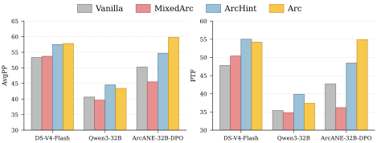
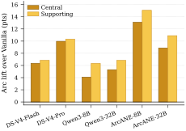
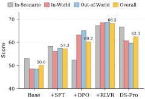

TL;DR
Characters change over a story, but existing role-play benchmarks treat them as fixed personas. ArcANE (Arc-Aware Narrative Evaluation) builds a Character Arc that tracks how a character's values and relationships shift across a novel, then asks whether a role-playing language agent (RPLA) answers the same scenario differently at each phase of that arc. Across six models and six ways of supplying narrative context, conditioning on the Arc is the best mode for every model, and training on ArcANE pushes a 32B model past DeepSeek-V4-Pro.
Full abstract
Role-playing language agents (RPLAs) simulate specific characters and personas across applications such as entertainment, companionship, interactive storytelling, and education. Faithful role-play requires more than producing plausible, in-character responses: as a character's values and behavior change over a narrative, an RPLA should reflect the character's state at the relevant stage. However, existing benchmarks largely treat characters as fixed personas or test only what they know at a given point in the narrative.
We introduce ArcANE (Arc-Aware Narrative Evaluation), a benchmark for evaluating whether an RPLA follows a character's development across a narrative. ArcANE first builds an Arc that maps how a character's values, motivations, or relationships change over the story. The benchmark then scores how well an RPLA's responses fit the corresponding stages of the Arc, covering three distinct scenario types: scenes from the novel, new situations within its world, and situations outside that world. We evaluate six models under six ways of providing narrative context. In every model, using the Arc up to the queried chapter yields the best performance, outperforming the strongest non-Arc context by 2.2–8.4 points. These results suggest that faithful role-play requires evolving character states and tracking their trajectory, rather than merely retrieving relevant episodic evidence.
Same scenario, four phases: does the answer move with the character?
One Out-of-World probe from Anna Karenina (Anna's arc toward Karenin), asked at each of its four phases. Left: the phase-specific reference. Right: the same model's response under Arc context and under Vanilla context, with per-phase judge scores; PTF at the foot grades all four responses as one sequence. Open this probe in the Explorer to compare every model and mode.
What ArcANE measures
Prior benchmarks check whether a response is in character. ArcANE checks whether it is in character at that point in the story: the same scenario is asked at every phase of a Character Arc, and the model must answer from the right phase.
Character Arcs and probes
A Character Arc segments a character's trajectory along one psychological axis (intrapersonal or relational) into phases, each with a chapter range, a state description, and anchoring events. A probe pairs one (scenario, question) with one reference response per phase, each carrying an action, a short thought, and a knowledge cutoff. Scenarios come in three types at increasing distance from the source text.
| Probe type | Scenario | Can be answered from |
|---|---|---|
| In-Scenario | A scene lifted from a passage of the novel. | The source passage |
| In-World | An unwritten situation inside the novel's setting. | The source's setting |
| Out-of-World | The scenario transposed to another era, such as a modern city or a pre-modern court. | The arc itself |
Construction pipeline
![Figure 2. Top, Character Arc construction: candidate axis production from an event stream and a state stream; cross-stream reconciliation into merged axes; external validation by an LLM-critic ensemble (training arcs) and human annotators (evaluation arcs). Bottom, probe generation: per-arc scaffolding (behavioral contrast, life-stage tags, era-agnostic axis); probe drafting of In-Scenario, In-World and Out-of-World probes with one reference per phase; validation with Q-Voice, Q-PhaseFit, Q-Anchor/Q-World and Q-Discrim, dropping failed probes.](static/images/pipeline.png)
Two chapter-level LLM streams (events and psychological states) propose candidate axes, which are reconciled, screened by an LLM-critic ensemble, and, for evaluation novels, validated by three human annotators (205 of 223 axes pass). A designer LLM then drafts one probe per (target phase, category) with phase-specific references, and each probe passes two validation rounds before entering the benchmark.
Pipeline stages in detail
Character Arc construction
- Candidate generation. Each stream induces intrapersonal axes (beliefs, motives, coping) and relational axes (trust, esteem, intimacy, antagonism), grounded in literary or psychological scholarship.
- Reconciliation. Axes proposed by both streams are merged with a direction label; unmatched candidates are kept, flagged, or discarded.
- Validation. Training arcs are kept if two of three LLM critics judge them grounded. Evaluation arcs are re-assessed by three human annotators and kept only with a majority vote.
Probe generation
- Per-arc preparation. A behavioral contrast (one yes/no decision whose answer differs across phases), per-phase life-stage tags, and, for Out-of-World, an era-agnostic axis.
- Probe drafting. One probe per (target phase, category), with N references: one for the target phase and N−1 projecting the other phases onto the same scenario.
- Validation. Q-Voice (in character, no anachronism, cutoff respected) and Q-PhaseFit (a blind judge recovers the phase) gate each reference; Q-Anchor / Q-World gate the scenario; Q-Discrim annotates weakly separated phase pairs.
Dataset
| Split | Novels | Characters | Arcs | Probes |
|---|---|---|---|---|
| Train (SFT and DPO) | 12 | 55 | 339 | 2,847 |
| Test (validated) | 5 | 25 | 205 | 1,754 |
| Test (unvalidated, low-popularity) | 2 | 7 | 26 | 253 |
| Total | 19 | 87 | 570 | 4,854 |
Validated novels: Harry Potter, Anna Karenina, Don Quixote, The Count of Monte Cristo, The Autobiography of Benjamin Franklin. Harry Potter is not on Project Gutenberg, so its artifacts are omitted from the public release.
More dataset statistics
- Validated slice: 205 of 223 candidate axes retained (147 unanimously, 58 over one dissent); 199 are probe-bearing.
- Arcs carry 2 to 6 phases (mean 3.51): 93 intrapersonal and 112 relational axes.
- Of 6,567 phase slots, 637 (9.7%) are marked
unavailableand excluded. Final Q-PhaseFit verdicts on available references: 91.7%pass, 8.3%adjacent.
Evaluation protocol
An LLM judge (DeepSeek-V4-Flash) scores each response against the phase reference on a 1–100 scale. Novels are averaged with equal weight, and Overall is the mean over the twelve probe-type × metric cells.
| Metric | Level | What it grades |
|---|---|---|
| APF Action Phase-Fidelity | per phase | The response's action against the reference action (strategy, valence, target). |
| RPF Reasoning Phase-Fidelity | per phase | The response's reasoning against the reference thought (trigger, appraisal, goal, strategy). |
| RAE Reasoning–Action Entailment | per phase | Whether the reference thought would license the response's action. |
| PTF Phase Trajectory Fidelity | per trajectory | All N phase responses as one sequence: alignment, direction, and shape against the reference trajectory. |
Context modes
All six modes share the same prompt and differ only in the context block, truncated at the query chapter.
| Mode | Context supplied |
|---|---|
| Vanilla | Character identity and query chapter only. |
| Summary | The most recent five chapter summaries. |
| RAG | Top-6 retrieved source-text chunks. |
| LifeChoice | CHARMAP-style character description plus retrieved memory. |
| TimeChara | Narrative-experts pipeline: predicted chapter and presence as inline hints. |
| Arc (ours) | The automatically constructed Character Arc, truncated at the query phase. References are never shown. |
Results
Arc context gives the best Overall score on every one of the six models.
Six models × six context modes on the validated slice (5 novels, 25 characters, 205 arcs, 1,754 probes). Switch the view by probe type, then pick the metric for the Arc lift.
Main results, validated slice
Table 2 of the paper. Arc rows are shaded, the best mode per column is bold, and Arc lift is Arc minus the strongest non-Arc mode on the underlined column.
- Arc leads everywhere. +2.2 to +8.4 Overall over each model's best non-Arc mode; top mode on 29 of 30 (model, novel) cells, all 30 bootstrap intervals exclude zero.
- The lift grows with distance from the text. For DeepSeek-V4-Pro: +0.5 In-Scenario, +5.2 In-World, +7.7 Out-of-World. Retrieval already covers In-Scenario; only Arc supplies the phase elsewhere.
- The lift is largest on the trajectory metric. Per-phase metrics can be gamed phase by phase; PTF rewards only sequences that move along the arc, and its Arc gap is at least as large in every category.
Low-popularity novels
On two low-popularity titles outside the training pool (He Knew He Was Right, The Odd Women), Arc is again the top mode for all six models, by +3.8 to +12.5.
| Model | Overall by context mode | Arc lift by probe type | ||||||||
|---|---|---|---|---|---|---|---|---|---|---|
| Vanilla | Summary | RAG | LifeChoice | TimeChara | Arc | Gap | In-Scenario | In-World | Out-of-World | |
| DeepSeek-V4-Flash | 51.59 | 52.91 | 52.50 | 53.70 | 51.86 | 60.32 | +6.62 | +2.58 | +8.64 | +6.41 |
| DeepSeek-V4-Pro | 49.61 | 53.15 | 51.14 | 53.27 | 50.26 | 60.56 | +7.29 | +3.61 | +8.78 | +7.44 |
| Qwen3-8B | 35.02 | 39.30 | 38.78 | 39.68 | 35.75 | 43.49 | +3.81 | +1.40 | +3.77 | +4.88 |
| Qwen3-32B | 39.47 | 47.14 | 46.14 | 47.62 | 40.30 | 51.50 | +3.87 | −1.15 | +4.62 | +7.09 |
| ArcANE-8B-DPO | 40.82 | 45.48 | 46.69 | 46.62 | 40.05 | 59.23 | +12.54 | +1.66 | +15.52 | +16.54 |
| ArcANE-32B-DPO | 46.69 | 49.43 | 48.42 | 52.88 | 46.17 | 65.21 | +12.33 | −1.04 | +16.30 | +19.56 |
Gap and lift are Arc minus the strongest non-Arc mode, reselected per cell. Probes pass the same validators as the main slice but are not annotator-audited.
Other role-playing models

The pattern holds for HER-32B and CoSER-8B/70B: every model gains on In-World and Out-of-World, and In-Scenario stays mixed.
Inside ArcANE, SFT raises Arc Overall from 50.1 to 58.4 at 32B, while DPO is what widens the In-World and Out-of-World lift (from +7.3 to +12.5).
Paired confidence intervals (all 30 Arc-versus-baseline contrasts exclude zero)
Arc-clustered bootstrap over the 199 contributing (novel, character, axis) clusters, 10,000 replicates. All 30 intervals exclude zero, and all 30 leave-one-novel-out differences stay positive.
| Model | vs. Vanilla | vs. Summary | vs. RAG | vs. LifeChoice | vs. TimeChara | Min. LOO |
|---|---|---|---|---|---|---|
| DeepSeek-V4-Flash | +6.87 [6.06, 7.70] | +3.95 [2.97, 4.92] | +4.85 [4.04, 5.60] | +3.60 [2.79, 4.38] | +6.61 [5.80, 7.40] | +3.41 |
| DeepSeek-V4-Pro | +10.02 [9.20, 10.84] | +5.20 [4.34, 6.07] | +5.69 [4.77, 6.61] | +4.66 [3.80, 5.51] | +10.25 [9.45, 11.06] | +4.34 |
| Qwen3-8B | +5.90 [5.01, 6.77] | +4.41 [3.58, 5.26] | +2.18 [1.36, 3.04] | +3.24 [2.44, 4.10] | +5.65 [4.85, 6.50] | +1.79 |
| Qwen3-32B | +6.43 [5.68, 7.19] | +4.54 [3.76, 5.37] | +2.89 [2.01, 3.78] | +2.71 [1.93, 3.50] | +5.69 [4.90, 6.48] | +2.33 |
| ArcANE-8B-DPO | +13.91 [12.64, 15.16] | +9.69 [8.40, 11.07] | +8.41 [7.15, 9.71] | +9.26 [8.13, 10.46] | +13.21 [12.07, 14.36] | +7.96 |
| ArcANE-32B-DPO | +10.52 [9.05, 12.01] | +11.10 [9.65, 12.60] | +8.41 [6.93, 9.89] | +8.35 [6.91, 9.86] | +10.44 [8.96, 11.95] | +7.30 |
Paired Arc-versus-baseline differences in Overall with 95% bootstrap intervals. Min. LOO: smallest difference against the reselected strongest baseline after omitting each novel in turn.
Analysis
What in the Arc matters?
Format alone is not enough: another character's arc in the same schema loses the gain, and the trained model needs the full phase descriptions.
MixedArc swaps in another character's arc from the same novel and fails to beat Vanilla on Qwen3-32B and ArcANE-32B-DPO. ArcHint keeps only axis names and the current phase label (about 40× shorter): within ±2.6 of the full Arc for untrained models, but only half the gain for ArcANE-32B-DPO.

Memorization and character class
The Arc lift is smallest on the most popular title and larger on supporting characters than on central ones, the opposite of what memorization would predict.
The Arc gap is smallest on Harry Potter (+3.0) and largest on Anna Karenina (+5.6) and Don Quixote (+5.1). Supporting characters gain +0.3 to +2.2 more than central characters on every model.

Is the judge trustworthy?
Annotators rate 87.1% of judge verdicts plausible, human re-scores track the judge at r = 0.96, three cross-judges agree on the ranking, and PTF drops sharply when responses are shuffled or reversed.
Judge validation tables
Judge vs. human re-score (n = 50 cells, human average over 3)
| Dimension | Pearson | Spearman | α (interval) | MAD | Δ judge − human |
|---|---|---|---|---|---|
| APF | 0.920 | 0.915 | 0.877 | 7.1 | +6.1 |
| RPF | 0.961 | 0.957 | 0.944 | 4.6 | +3.0 |
| RAE | 0.967 | 0.962 | 0.965 | 4.2 | +0.2 |
| Overall | 0.962 | 0.958 | 0.947 | 4.7 | +3.1 |
The re-score is anchored to the judge verdict, so this measures how much humans adjust the judge, not a blind human baseline.
System ranking by each judge (300-cell sample; mean per-cell Overall in parentheses)
| Rank | DeepSeek-V4-Flash | Claude Opus 4.5 | GPT-5.5 | Claude Sonnet 4.5 |
|---|---|---|---|---|
| 1 | ArcANE-32B-DPO/Arc (66.0) | ArcANE-32B-DPO/Arc (62.2) | ArcANE-32B-DPO/Arc (69.9) | ArcANE-32B-DPO/Arc (57.5) |
| 2 | DeepSeek-V4-Flash/Arc (58.3) | DeepSeek-V4-Flash/Arc (51.9) | Qwen3-32B/Arc (55.3) | Qwen3-32B/Arc (39.5) |
| 3 | Qwen3-32B/Arc (53.7) | Qwen3-32B/Arc (48.7) | DeepSeek-V4-Flash/Arc (54.2) | DeepSeek-V4-Flash/Arc (39.0) |
| 4 | Qwen3-32B/Vanilla (44.5) | Qwen3-32B/Vanilla (41.9) | Qwen3-32B/Vanilla (47.1) | Qwen3-32B/Vanilla (31.8) |
PTF under perturbation (N = 75 probes per model under Arc context; paired deltas vs. the original order)
| Condition | ArcANE-32B-DPO | DeepSeek-V4-Pro | ||||
|---|---|---|---|---|---|---|
| Align | Dir | Avg | Align | Dir | Avg | |
| Original order | 56.0 | 54.8 | 53.5 | 57.9 | 55.3 | 54.5 |
| Responses shuffled | 47.7 | 45.3 | 44.7 | 56.2 | 54.4 | 53.2 |
| Responses reversed | 34.1 | 30.0 | 30.5 | 52.2 | 48.3 | 48.2 |
| Blocks shuffled (diagnostic only) | 43.3 | 42.7 | 41.0 | 53.7 | 50.2 | 49.8 |
| Δ shuffle | −8.3 | −9.4 | −8.8 | −1.7 | −0.9 | −1.3 |
| Δ reverse | −21.9 | −24.7 | −23.0 | −5.7 | −7.0 | −6.3 |
| Δ block-shuffle | −12.8 | −12.1 | −12.5 | −4.2 | −5.1 | −4.7 |
Avg is PTF, the mean of alignment, direction, and the shape sub-score (not shown). Block-shuffle is a diagnostic only.
Why does training help?
Not a register artifact: forcing Qwen3-32B into ArcANE's first-person style lowers its score (53.8 → 50.0), while ArcANE-32B-DPO holds at 56.7. DPO's adjacent-phase contrast is what sharpens phase separation.
Training-effect tables
Pair-trace counts (per-probe Overall under Arc, 1,750 validated probes)
| Comparison | Wins | Losses | Mean Δ |
|---|---|---|---|
| ArcANE-32B-DPO vs. Qwen3-32B | 1,198 | 468 | +9.49 |
| ArcANE-32B-DPO vs. ArcANE-32B-SFT | 940 | 702 | +1.89 |
Wins and losses are probes with |Δ| > 1 on the 0–100 scale; the remainder are ties.
POV control (150 stratified probes, per-probe Overall)
| System | Overall |
|---|---|
| Qwen3-32B | 53.8 |
| Qwen3-32B + first-person instruction (POV-Qwen) | 50.0 |
| ArcANE-32B-DPO | 56.7 |
Proposition coding, Overall yes-rates (n = 150 probes)
| Proposition (yes-rate, %) | Qwen3-32B | POV-Qwen | ArcANE-32B-DPO |
|---|---|---|---|
| P1 Phase distinctness | 10.5 | 62.2 | 65.3 |
| P2 Canonical specificity | 10.7 | 60.7 | 12.7 |
| P4 Phase register switch | 11.2 | 63.6 | 65.3 |
P1: per-phase content differs across phases. P2: the response names source-novel characters, places, or scenes. P4: voice and register shift with the phase. POV-Qwen's high P2 rate is mostly canon-drop into out-of-world scenarios, which the rubric penalizes. Coder: DeepSeek-V4-Pro.
Training arc-aware RPLAs
SFT → DPO → RLVR lifts Qwen3-32B from 50.0 to 68.2 Overall under Arc context, above DeepSeek-V4-Pro (62.3). All five checkpoints are released.
- SFT. Imitation targets from
gpt-5.4-miniunder Arc context; the teacher sees the phase reference privately, so nothing leaks into the input. - DPO. The anchor-phase response is chosen and an adjacent-phase response to the same scenario is rejected (14,671 pairs over 2,516 probes).
- RLVR. GRPO on the 32B DPO model with reward mean(APF, RPF, RAE)/100 from Qwen3.6-27B; evaluation uses a separate judge on the disjoint validated slice.

RLVR improves all three probe categories, recovering DPO's In-Scenario loss while keeping its In-World and Out-of-World gains. The rewarded per-phase metrics rise under all three judges; PTF does not, since each reward covers a single phase.
Released checkpoints (Hugging Face, merged weights)
| Stage | 8B | 32B |
|---|---|---|
| SFT | ArcANE-8B-SFT | ArcANE-32B-SFT |
| DPO | ArcANE-8B-DPO | ArcANE-32B-DPO |
| RLVR | not trained | ArcANE-32B-RLVR |
Training data: ArcANE-Data (SFT, DPO, and RL configurations).
DPO to RLVR under three judges, and training configuration
| Metric | Stage | DeepSeek-V4-Flash (evaluation judge) | Qwen3.5 (cross-judge) | Qwen3.6-27B (reward judge) |
|---|---|---|---|---|
| Overall | DPO | 60.2 | 50.3 | 45.5 |
| RLVR | 68.2 | 56.0 | 50.6 | |
| Δ | +8.0 | +5.7 | +5.2 | |
| Rewarded | DPO | 62.3 | 51.3 | 49.6 |
| RLVR | 71.1 | 60.6 | 58.4 | |
| Δ | +8.8 | +9.3 | +8.8 | |
| PTF | DPO | 53.7 | 47.1 | 33.1 |
| RLVR | 59.4 | 42.2 | 27.3 | |
| Δ | +5.7 | −5.0 | −5.8 |
Rewarded is the mean of APF, RPF, and RAE. Values are comparable down a column, not across columns. Under the evaluation judge the base and DeepSeek-V4-Pro sweeps lack Benjamin Franklin, so stage figures cover four of the five validated novels.
Configuration: SFT for 1 epoch at LR 1e-5 (8B, full fine-tuning) / 1e-4 (32B, LoRA r = 64, α = 128), effective batch 64 / 32, max length 8192; DPO for 1 epoch at LR 5e-6 / 1e-5, batch 64; RLVR (32B) for 86 steps / 2 epochs at LR 1e-5, KL β = 0.001, clip ε = 0.2, 8 rollouts per prompt, 2,812 training and 757 validation prompts. SFT and DPO ran on one NVIDIA B200; RLVR used two B200s plus one serving the reward judge.
Takeaways
- Faithful role-play means being in character at that point in the story. ArcANE makes this phase fidelity measurable.
- Arc-grounded context beats retrieval and summaries on every model, most of all beyond the source text where retrieval has nothing to return.
- Training on ArcANE's contrastive phase pairs teaches models to track a character's trajectory, not just their traits.
BibTeX
@misc{song2026arcaneroleplayinglanguageagents,
title={ArcANE: Do Role-Playing Language Agents Stay in Character at the Right Time?},
author={Woojung Song and Nalim Kim and Sangjun Song and Chaewon Heo and Jongwon Lim and Yohan Jo},
year={2026},
eprint={2606.05553},
archivePrefix={arXiv},
primaryClass={cs.CL},
url={https://arxiv.org/abs/2606.05553},
}